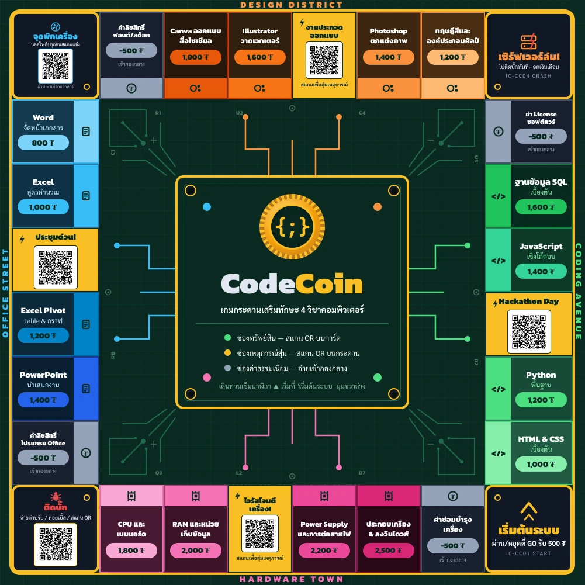

CodeCoin คือบอร์ดเกมเพื่อการศึกษาแนวซื้อขายทรัพย์สิน เล่น 12 รอบให้จบใน 1 คาบเรียน (~50 นาที) แล้วตัดสินผู้ชนะด้วยคะแนนรวมสูงสุด ผู้เล่นใช้มือถือสแกน QR บนการ์ดและกระดานเพื่อตอบคำถาม ทุกการซื้อ อัปเกรด และออกจากคุกต้องใช้ความรู้
| หัวข้อ | รายละเอียด |
|---|---|
| ผู้เล่น | 2–4 คน + Banker 1 คน (เป็นผู้เล่นด้วยได้) |
| เวลาเล่น | ~50 นาที · 12 รอบ (ปรับเป็น 10 หรือ 15 รอบได้) |
| วิชาที่ครอบคลุม | Coding · Microsoft Office · Graphic Design · การประกอบคอมพิวเตอร์ |
| สกุลเงินในเกม | TechCoin (₮) |
| สิ่งที่ต้องมีเพิ่ม | มือถือที่ต่อเน็ตได้อย่างน้อย 1 เครื่อง (ดีที่สุดคนละเครื่อง) ไม่ต้องติดตั้งแอป ไม่ต้องล็อกอิน |
เว็บแอปของเกม: ballgamerzaman-code.github.io/codecoin
| อุปกรณ์ | จำนวน | ใช้ทำอะไร |
|---|---|---|
| กระดานพับ 50 × 50 ซม. | 1 ผืน | 28 ช่อง มี QR พิมพ์บนกระดาน 7 จุด (เหตุการณ์ 4 · ติดบั๊ก 1 · จุดพักเครื่อง 1 · เริ่มต้นระบบไม่มี QR) |
| การ์ดทรัพย์สิน | 16 ใบ | 4 โซน โซนละ 4 ใบ มี QR ราคาซื้อ และค่าเช่า L0–L3 |
| การ์ดกู้ระบบขั้นสุด | 1 ใบ | ตั๋วเข้าด่านพิเศษช่วง Crash Round — Banker ถือไว้ |
| ธนบัตร TechCoin | 200 ใบ | 5 ราคา: 10 · 50 · 100 · 500 · 1,000 ₮ |
| โทเค็นผู้เล่น | 4 ตัว | สีประจำ 4 วิชา |
| ลูกเต๋า | 2 ลูก | ทอยพร้อมกัน 2 ลูก |
| คลิปบอกระดับอัปเกรด | 24 ตัว | หนีบการ์ดทรัพย์สินบอกระดับ L1 / L2 / L3 |
| ถาดตั้งการ์ด + คู่มือกติกา | อย่างละ 1 | ตั้งการ์ดให้หัน QR ออก สแกนได้โดยไม่ต้องหยิบ |
ไม่มีการ์ดเหตุการณ์เป็นกระดาษ เหตุการณ์ 20 แบบสุ่มผ่าน QR บนกระดาน คำถาม 81 ข้อและโจทย์ Bug Jam 19 ข้ออยู่ในเว็บแอปทั้งหมด
ทุกคนเริ่มด้วยเงิน 6,000 ₮ ที่ช่อง "เริ่มต้นระบบ" มุมขวาล่าง และยังไม่มีทรัพย์สิน
ปรับความยาวได้ตามเวลาเรียน: 10 รอบ (คาบสั้น) · 12 รอบ (มาตรฐาน) · 15 รอบ (คาบคู่) — ตัวเลข Crash Round ในคู่มือนี้อิงเกมมาตรฐาน 12 รอบ
ทุกตามี 5 ขั้น เดินทวนเข็มนาฬิกาเสมอ (จาก "เริ่มต้นระบบ" ขึ้นไปทาง Coding Avenue)
ก่อนเข้ารอบที่ 10 Banker ต้องประกาศให้ชัดว่าเข้า Crash Round แล้ว ค่าเช่าและรางวัลทุกอย่าง ×2 ให้ทุกคนเตรียมกันเงินสดหรือขายทรัพย์สินได้ทัน
กระดานมี 28 ช่อง: มุม 4 ช่อง และแต่ละด้านเป็น 1 โซนวิชา มีทรัพย์สิน 4 ช่อง เหตุการณ์ 1 ช่อง และค่าธรรมเนียม 1 ช่อง
| ช่อง | จำนวน | หยุดแล้วทำอะไร |
|---|---|---|
| เริ่มต้นระบบ (มุมขวาล่าง) | 1 | ผ่านหรือหยุด รับ 500 ₮ |
| ทรัพย์สิน | 16 | สแกน QR บนการ์ด ช่องว่าง = ซื้อได้ · มีเจ้าของ = จ่ายค่าเช่าตามระดับบนการ์ด |
| เหตุการณ์สุ่ม | 4 | สแกน QR บนกระดาน เว็บสุ่มเหตุการณ์ประจำโซน (Hackathon Day · งานประกวดออกแบบ · ประชุมด่วน! · ไวรัสโจมตีเครื่อง!) |
| ค่าธรรมเนียม | 4 | จ่าย 500 ₮ เข้ากองกลาง |
| เซิร์ฟเวอร์ล่ม! (มุมขวาบน) | 1 | ย้ายไปช่องติดบั๊กทันที ไม่ได้เงินเดือน |
| ติดบั๊ก · Bug Jam (มุมซ้ายล่าง) | 1 | คนที่ติดออกได้ 3 ทาง ดูด้านล่าง |
| จุดพักเครื่อง (มุมซ้ายบน) | 1 | บอสไฟต์ทั้งโต๊ะ ดูหัวข้อด่านพิเศษ |
ราคาซื้อ 800–2,500 ₮ ตามที่พิมพ์บนการ์ด ตอบคำถามบนเว็บเพื่อลดราคา
| โหมด | คำถาม | ตอบถูก | ตอบผิดหรือหมดเวลา |
|---|---|---|---|
| ปกติ | ระดับ 1 | ลด 20% | ซื้อได้ในราคาเต็ม |
| มั่นใจ 💎 | ระดับ 4 (ยากกว่า จำกัด 25 วิ) | ลด 40% | หมุนวงล้อ "สุ่มผลแก้บั๊ก" จ่าย 40%–160% ของราคา หรือจ่ายเต็ม + ข้ามตาถัดไป |
กดโหมดมั่นใจแล้วต้องกดยืนยันภายใน 5 วินาที ไม่ทันหรือกดยกเลิก = กลับไปเลือกโหมดใหม่ ไม่เสียสิทธิ์
แต่ละโซนมีเหตุการณ์ 5 ใบ (รวม 20 ใบ) เงินที่เสียจากเหตุการณ์วางเข้ากองกลาง
| แบบ | เกิดอะไรขึ้น | ตัวอย่าง |
|---|---|---|
| ธรรมดา | รับเงิน จ่ายเงิน หรือข้ามตา | ไฟกระชากเครื่องพัง: จ่าย 1,200 |
| เลือกเดิมพัน | เลือกรับ +300 แบบปลอดภัย หรือเดิมพัน (โอกาส 50% ได้ 3 เท่าของเงินเดิมพัน อีก 50% เสียเงินเดิมพัน) | เข้ารอบชิง Hackathon!: เดิมพัน 1,000 |
| ลูกโซ่ | เก็บเงินจากทุกคน หรือให้คนอื่นทุกคนจ่าย | ไวรัสระบาดในระบบ!: คนอื่นทุกคนจ่าย 500 |
| แข่งตอบเร็ว | ทุกคนแข่งตอบปากเปล่าใน 15 วิ คนถือมือถือกดเลขผู้ชนะ คนชนะรับรางวัล | ชนะ Hackathon ระดับประเทศ!: +2,000 |
| ระดับ | เวลา | ตอบถูก | ตอบผิดหรือหมดเวลา |
|---|---|---|---|
| ง่าย | 20 วิ | ออกฟรี | จ่ายค่าปรับ 300 เพื่อออก หรือรอลองใหม่ตาหน้า |
| ยาก 💎 | 45 วิ | ออกฟรี + โบนัส 300 (ดู hint แล้วเหลือ 150) | จ่ายค่าปรับ 500 เพื่อออก หรือรอลองใหม่ตาหน้า · อดโบนัส |
ใครหยุดที่จุดพักเครื่อง ทั้งโต๊ะสู้บอสพร้อมกัน แล้วแบ่งกองกลางตามฝีมือ ไม่ใช่คนที่หยุดกวาดคนเดียว
| ผล | เกิดอะไรขึ้น |
|---|---|
| ดาเมจรวมถึงเป้า (จำนวนคน × 1.5 ปัดขึ้น: 2 คน = 3 · 3 คน = 5 · 4 คน = 6) | แบ่งกองกลางตามสัดส่วนดาเมจ เช่น ทำ 3 จาก 6 = ได้ครึ่งกอง |
| ไม่ถึงเป้า | ไม่มีใครได้ กองกลาง (รวมค่าเข้า) สะสมต่อ |
เริ่มจากปุ่ม "กู้บั๊กด่วน" บนหน้าจุดพักเครื่อง ไม่มี QR แยกบนกระดาน เล่น 2 คน 2 มือถือ:
| ด่าน | เวลา | ทำอะไร |
|---|---|---|
| ตัดสายไฟ | 35 วิ | ผู้กดบอกสีสายไฟ ผู้อ่านคู่มือบอกว่าต้องตัดเส้นไหน |
| ป้อนรหัสคีย์แพด | 55 วิ | แปลงไอคอน ตัวเลข หรือกรอบสีตามกฎเป็นรหัส |
| จับคู่คำสั่ง | 55 วิ | กดคำสั่ง Python ให้ตรงกับภารกิจ 3 ข้อตามลำดับ |
| กู้ระบบขั้นสุด | 90 วิ | ตัดสายไฟต่อด้วยคีย์แพด — ต้องใช้การ์ด (ดูด้านล่าง) |
ค่าเช่าทุกช่อง ×2 ซ้อนกับโบนัสโซน ×1.5 ได้ (รวม ×3) เช่น ประกอบเครื่อง L3 ปกติ 2,000 → Crash 4,000 → Crash + ครบโซน 6,000 ₮
รางวัลทุกอย่างก็ ×2 เช่นกัน: เงินเดือนผ่านเริ่มต้นระบบ 500 → 1,000 · เงินจากเหตุการณ์บวก · โบนัส Bug Jam · ส่วนแบ่งกองกลาง Server Meltdown · รางวัล Debug Rescue — ส่วนค่าปรับ ค่าธรรมเนียม และค่าเข้าด่านไม่คูณ
ก่อนเริ่มเกมให้ตกลงกันว่าจะเล่นแบบไหน มี 2 แบบ:
| แบบ | เกมจบเมื่อ | ผู้ชนะ |
|---|---|---|
| กำหนดรอบ | ครบจำนวนรอบที่ตกลงไว้ (10 / 12 / 15 รอบ) | คนที่คะแนนรวมสูงสุด |
| ล้มละลาย | ผู้เล่นล้มละลายจนเหลือคนเดียว | คนสุดท้ายที่ยังไม่ล้มละลาย |
ไม่ว่าเล่นแบบไหน คนที่ล้มละลายต้องออกจากเกมทันที ส่วนคนที่เหลือเล่นต่อไปจนถึงเงื่อนไขจบ แบบกำหนดรอบนับคะแนนดังนี้:
คะแนนรวม = เงินสด + มูลค่าทรัพย์สิน
| เรื่อง | กติกา |
|---|---|
| โบนัสโซน | ถือครบ 3 ใน 4 ช่องของโซนเดียวกัน → ค่าเช่าทุกช่องที่ถือในโซนนั้น ×1.5 |
| ค่าอัปเกรด | 40% ของราคาซื้อ เท่ากันทุกระดับ (พิมพ์ไว้หลังการ์ด) |
| ขายคืนธนาคาร | ได้ 50% ของเงินที่ลงไป (ราคาซื้อ + ค่าอัปเกรดที่จ่ายแล้ว) |
| เทรดระหว่างผู้เล่น | ไม่มี ขายได้เฉพาะคืนธนาคาร |
| กองกลาง | ค่าธรรมเนียม ค่าปรับ Bug Jam และเงินที่เสียจากเหตุการณ์วางรวมกลางกระดาน แจกออกผ่านบอสไฟต์เท่านั้น |
| ล้มละลาย | จ่ายไม่ไหว → ขายคืนธนาคารจนพอจ่าย → ขายหมดแล้วยังไม่พอ = ล้มละลาย ออกจากเกม |
| คำถาม | คำตอบ |
|---|---|
| มือถือไม่พอทุกคน | ใช้เครื่องเดียวส่งต่อกันได้ ยกเว้นบอสไฟต์กับกู้บั๊กด่วนที่ต้องใช้คนละเครื่อง |
| เน็ตหลุด | เว็บที่เคยเปิดแล้วเล่นออฟไลน์ได้ · ห้องรอกู้บั๊กด่วนต้องใช้เน็ต ถ้าเชื่อมไม่ได้ให้ใช้ "เล่นแบบพิมพ์รหัสเอง" (ทั้งคู่พิมพ์รหัส 4 ตัวเดียวกัน) |
| เผลอรีเฟรชกลางคำถาม | เว็บกลับมาที่ข้อเดิม เวลาเดิม สแกนเหตุการณ์ซ้ำก็ได้ใบเดิม สุ่มใหม่ไม่ได้ |
| Bug Jam ตอบผิดแล้วลองใหม่ในตาเดิมได้ไหม | ไม่ได้ ตาละ 1 ครั้ง |
| อัปเกรดตอบผิดเสียเงินไหม | ไม่เสีย จ่ายค่าอัปเกรดเฉพาะตอนตอบถูก |
| เว็บบอก "กู้บั๊กด่วน" แปลว่าเว็บพังไหม | ไม่ใช่ นั่นคือมินิเกม หน้าจอสีแดงในเกมหมายถึงตอบผิดหรือโดนปรับเท่านั้น |
ที่มา: โค้ดเว็บแอป (CONFIG ใน index.html) · data.json · ไฟล์กระดานและการ์ดส่งพิมพ์ · สรุปหลัง playtest · ตารางราคา D+E · docs/PROJECT_SUMMARY.md